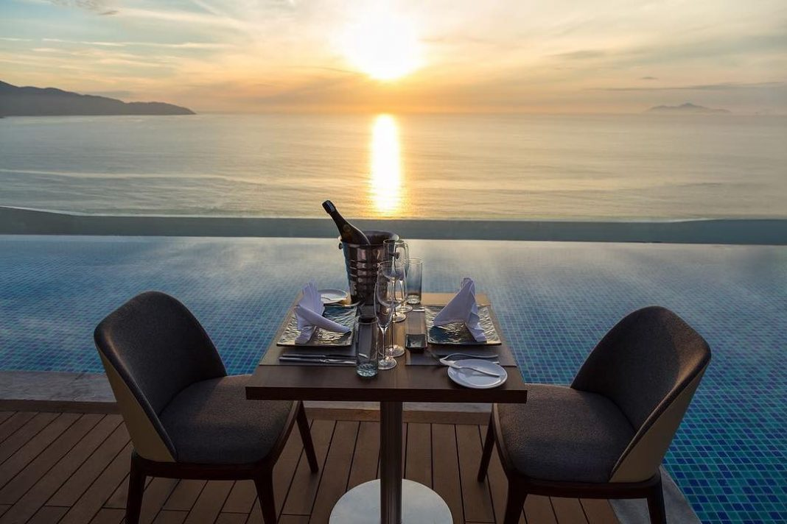
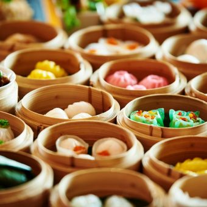
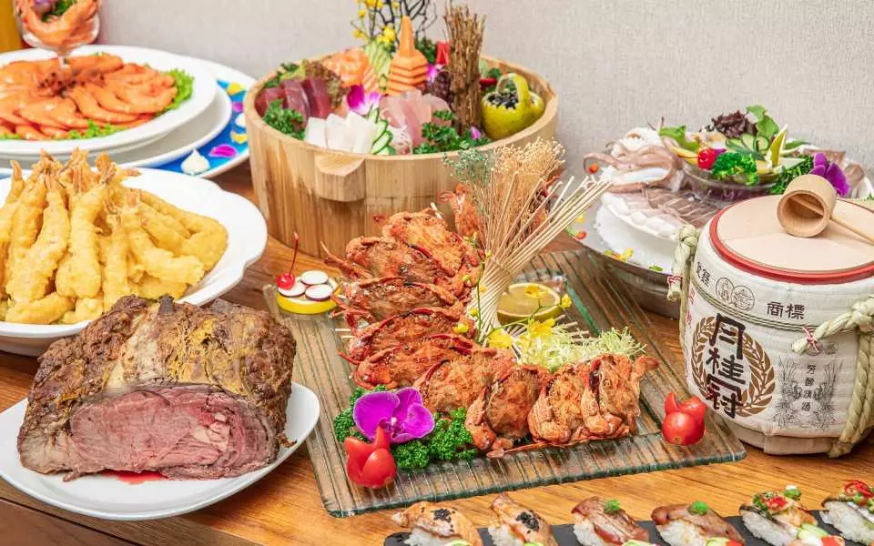
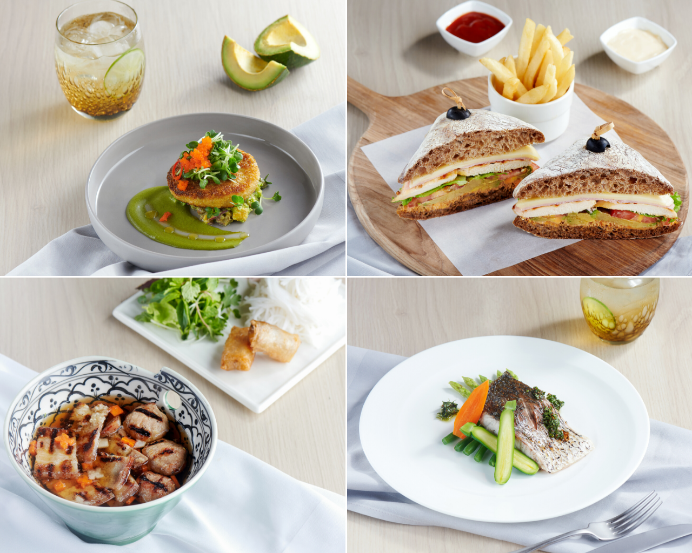
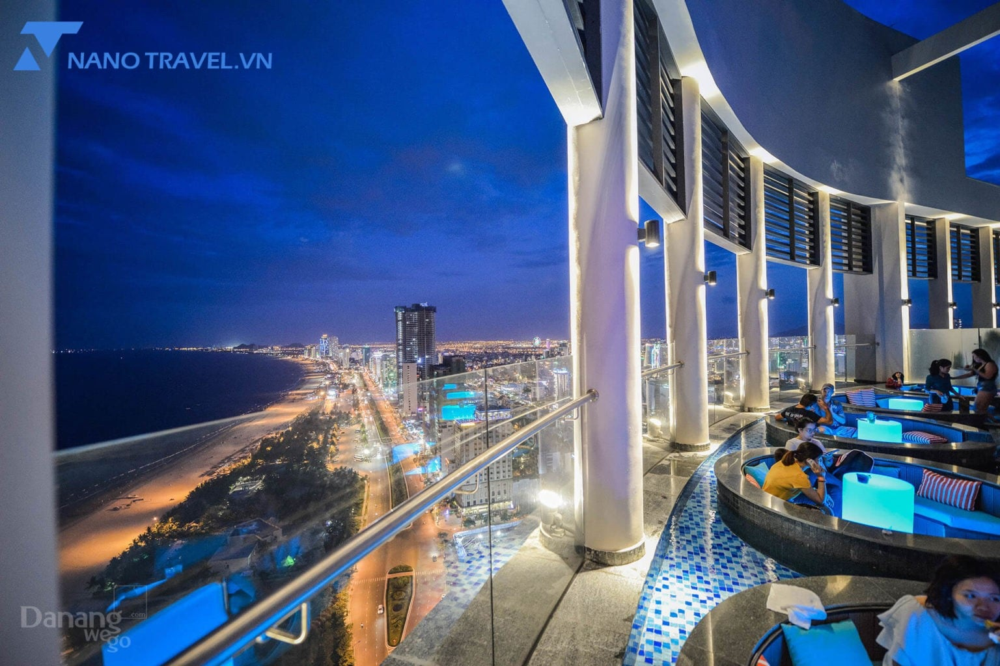

TIN TỨC
Trải Nghiệm Ẩm Thực Ngon Không Gian Độc Đáo Tại SKY View Đà Nẵng
Tránh xa những khói bụi của thành phố, bộn bề của cuộc sống, SKY View Restaurant chính là địa điểm lý tưởng để bạn có thể gạt bỏ mọi thứ để tận hưởng cuộc sống, thưởng thức hải sản tươi ngon và ngắm thành phố từ tầng 20.
Grand Mercure – Nhà hàng Golden Dragon đặc biệt ra mắt “Weekend Dim Sum Buffet”
Với thiết kế sang trọng và hài hòa theo phong cách Trung Hoa, nhà hàng Golden Dragon, tọa lạc tại tầng 2 khách sạn 5-sao Grand Mercure Danang, mang đến cho thực khách không gian ẩm thực Trung Hoa tinh túy với hơn 50 món Dim Sum phong phú được chế biến bởi các đầu bếp hàng đầu.
La Maison Deli Danang – The “House With Delicious Food”

Located in the center of the city, on the bank of Han River, La Maison Deli is a combination of finest culinary arts, with a diverse creative Vietnamese menu. Diners will be fascinated by different tastes from familiar to different, from homey to creative.
Thưởng Thức Buffet Tối Tại Nhà Hàng The Eatery Khách Sạn Four Points by Sheraton Penghu
Hãy chiêu đã bản thân bằng một bữa tối thịnh soạn tại nhà hàng khách sạn Four Points by Sheraton Penghu, tiết kiệm 10% khi đặt dịch vụ qua KKday, chỉ cần xuất trình mã QR là quý khách sẽ được vào thưởng thức hàng loạt món ăn hấp dẫn đến từ nhiều nước khác nhau.
KHU NGHỈ DƯỠNG SHERATON GRAND ĐÀ NẴNG GIỚI THIỆU THỰC ĐƠN MỚI TẠI NHÀ HÀNG TABLE 88
Nằm tại sảnh chính Tòa nhà Lễ tân của Khu nghỉ dưỡng và là nhà hàng chính, phục vụ cả ngày, Table 88 thu hút bởi không gian sang trọng với đá cẩm thạch, nội thất hướng theo tông màu màng đồng chủ đạo, không gian bếp mở phóng khoáng gần gũi với thực khách. Đây là nơi hoàn hảo để bạn khởi động ngày mới nhẹ nhàng với bữa sáng tự chọn giàu dinh dưỡng trong khung cảnh bên cửa sổ hướng về bãi cỏ xanh mướt, hồ bơi vô cực hướng thẳng đại dương xanh thẳm.
Horizon Bar – Rooftop Bar Có View Biển Đẹp Nhất Đà Nẵng
Horizon Bar nằm trên tầng 36 của khách sạn ven biển Four Points By Sheraton Danang với tầm nhìn ôm trọn biển trời. Thiết kế Bar hiện đại, sang trọng, có không gian trong nhà và ngoài trời, có bể bơi vô cực view hướng ra biển siêu lãng mạn. Từ vị trí này, bạn có thể ngắm nhìn khung cảnh toàn thành phố Đà Nẵng từ trên cao.